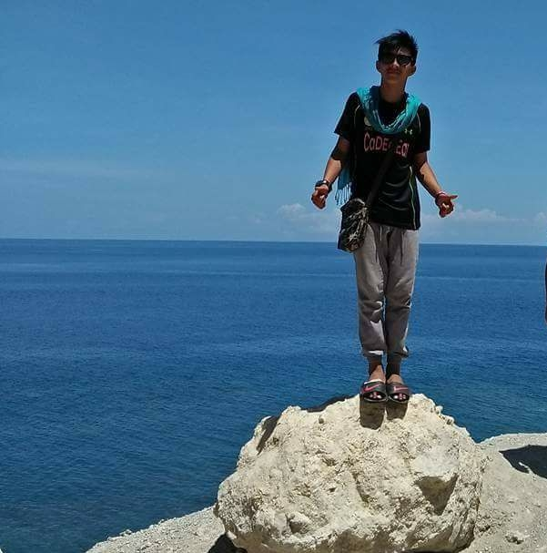

|

Kervin S. Germo
Address: DOS Mintex
Gender: Male
Status: Single
Contact No: +639559678210
Email: Kervingermo19@gmail.com
Facebook: kervingermo_09
Objective:
To be able to apply what I've been learned in my School.
Educational Background:
College:
Notre Dame RVM College of Cotabato
#74 Sinsuat Ave. Cotabato City 9600
Secondary:
Notre Dame of UPI Inc.
Nuro Upi, Maguindanao
(SY 2014-2015)
Primary:
Nuro Central Elementary School
Nuro Upi Maguindanao
(SY 2009-2010)
Skills:
Language: Fluency in English, Filipino, Ilonggo, Bisayan
Communication: Comfortable in writting and speaking
sports,dancing,Singing
|